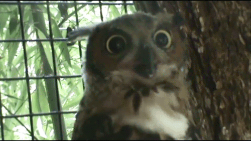

"Si T'es Pas Jolie Au Moins Sois Polie", Ou Le Tone Policing
[caption id=“attachment_257” align=“aligncenter” width=“300”] J’ai trouvé que cette photo de piaf en colère me représentait bien, alors voilà.[/caption]
J’ai trouvé que cette photo de piaf en colère me représentait bien, alors voilà.[/caption]
Mon article sur les pseudo-allié.es de la cause autistique semble avoir fait assez de bruit sur Internet depuis sa publication. On l’a qualifié de “véhément” sur des forums, de “provocateur” et “violent”. Si certain.es autistes m’ont dit que cet article leur faisait du bien, d’autres ont été plus précautionneux au moment d’adhérer à mes propos, le jugeant “agressif” et se demandant dans quelle mesure nous ne risquions pas de reproduire avec les neurotypiques l’exclusion que nous subissons. Cette question est tout à fait légitime: nous connaissons la douleur d’être exclu.es alors pourquoi pratiquer l’exclusion envers des personnes bien-intentionnées, qui souhaitent nous aider?
Je souhaite revenir sur ces deux questions, celle du ton employé et celle de l’exclusion des neurotypiques. Concernant le ton agressif de l’article, que je n’ai aucun mal à assumer, je suis consciente qu’il est susceptible de bouleverser la représentation de l’autiste comme l’éternelle victime, dépendant des braves neurotypiques allié.es pour se défendre des discriminations. On retrouve souvent, dans l’imaginaire neurotypique, la figure de l’autiste timide, agressé.e par la vie, dans sa bulle (elle me fait bien rire celle-là), d’une gentillesse innée et incapable de la moindre méchanceté. Sortir de ce stéréotype, c’est risquer de se voir rappeler à l’ordre, par le biais d’injonctions à se conformer à ce que l’on attend de nous. Pour donner un exemple, quelqu’un m’a déjà accusée de me comporter “comme une neurotypique” pour me reprocher un comportement qu’il estimait être mesquin. Je n’ai aucun mal à assumer ma bitch intérieure, mais ce qui m’interpelle, dans cette formulation, c’est l’injonction implicite qu’elle contient: si tu es méchante avec moi, tu n’es pas vraiment autiste. C’est le double-tranchant du pseudo-allié, qui en tant que dominant estime qu’il a le bon droit de valider mon identité, ou de l’invalider si je ne suis pas gentille avec lui, et par conséquent de me retirer son soutien.

Pourtant, les autistes que je côtoie sont loin d’être des enfants de cœur. Enfants, adolescents ou adultes, je me retrouve souvent face à des caractères bien trempés, peu enclins au compromis et ne s’embarrassant pas de pincettes pour exprimer leur pensée. Cela ne vous rappelle pas l’un des symptômes du fonctionnement autistique? L’émoi que mon article a provoqué par son ton agressif est bien représentatif de l’emprise du système de valeurs imposés par les neurotypiques autour de la communication. Mais mes agneaux, vous n’êtes pas au bout de vos peines: je suis peut-être celle qui est visible, mais la colère qui gronde dans une partie de la communauté neurAtypique s’amplifie et croyez-moi, je suis de loin l’une des plus mesurée dans mes propos.
NOW PANIC

Quand on me rappelle à l’ordre, que ce soit par la menace voilée de remettre en question ma condition autistique (et donc ma légitimité à m’exprimer sur le sujet) ou par l’injonction explicite à respecter les codes de la bienséance, c’est une violence qui est exercée et une manière de saper le fond de mes propos pour se concentrer sur la forme. Ce n’est qu’une énième preuve de la supériorité morale dont se drapent nos “allié.es foireux” pour décrédibiliser nos revendications.
Franchement, il est cruel et ridicule de s’attendre à ce qu’une personne soit calme et polie en réponse à un acte d’oppression. Les personnes marginalisées ne disposent souvent pas du luxe de la distance émotionnelle dans une discussion sur leurs droits et leurs expériences. Deuxièmement, le tone policing (trad: le flicage du ton employé) est la technique de distraction ultime. Quand vous le faites, vous évacuez automatiquement de la conversation les méfaits de quelqu’un pour vous concentrer sur l’autre personne et ses récations. Le tone policing est une manière de ne pas assumer la responsabilité d’avoir merdé, et elle dénigre la position de l’autre personne en la catégorisant comme étant émotionnelle et donc irrationnelle. […] Mais être dans l’émotion ne rend en aucun cas les propos de qui que ce soit moins légitimes. Il est aussi important de noter que, en faisant du tone policing, non seulement vous refusez de remettre en question votre propre comportement oppressif, mais vous culpabilisez également l’autre personne, car elle n’est pas “assez gentille” pour être écoutée ou prise au sérieux.
Traduit de l’anglais à partir de This is a post about tone policing
Je voudrais néanmoins apporter une nuance en ce qui concerne l’expression de la colère, particulièrement sur Internet: oui, la colère des personnes qui subissent des oppressions est légitime est a le droit d’être exprimée et les gardiens de la bienséance doivent être envoyés valser. On est d’accord. Seulement, je n’adhère pas à la sacralisation de la colère que l’on trouve dans certains milieux militants, et qui justifie le harcèlement envers les personnes catégorisées comme oppressives. L’article À propos de la toxicité et des abus en milieu militant sur Internet décrit ce phénomène bien mieux que je ne le pourrais et met en garde contre les dérives qui ont mené certain.es blogueur.es à partir d’Internet pour se préserver. Je suis consciente que je ne connais pas les réalités vécues par des personnes réagissant à mes articles où sur d’autres blogs et le côté déshumanisant que peut prendre la justice virtuelle a des impacts bien réels.
Donc n’allez pas prendre cet article comme un encouragement à la haine sur les réseaux sociaux envers des personnes que vous jugez oppressives. Nous ne savons rien des personnes avec qui nous interagissons sur Internet, et des erreurs ou des maladresses ne justifient pas d’aller jusqu’à l’incitation au suicide en guise de réponse (véridique).
Dans un autre article je parlerai de la mixité choisie comme outils d’émancipation, et de sa pertinence ou non dans la lutte pour la neurodiversité. Je prends pour le moment des vacances du militantisme virtuel pour prendre soin de moi, passer des vacances avec des gens que j’aime, glander, voyager, avoir des discussions passionnantes sur des terrasses à 3h du matin en fumant comme des pompiers, bitcher sur la dictature du barbecue et partir en colo avec d’horribles ados.
Paix, amour et doigts dans le cul.